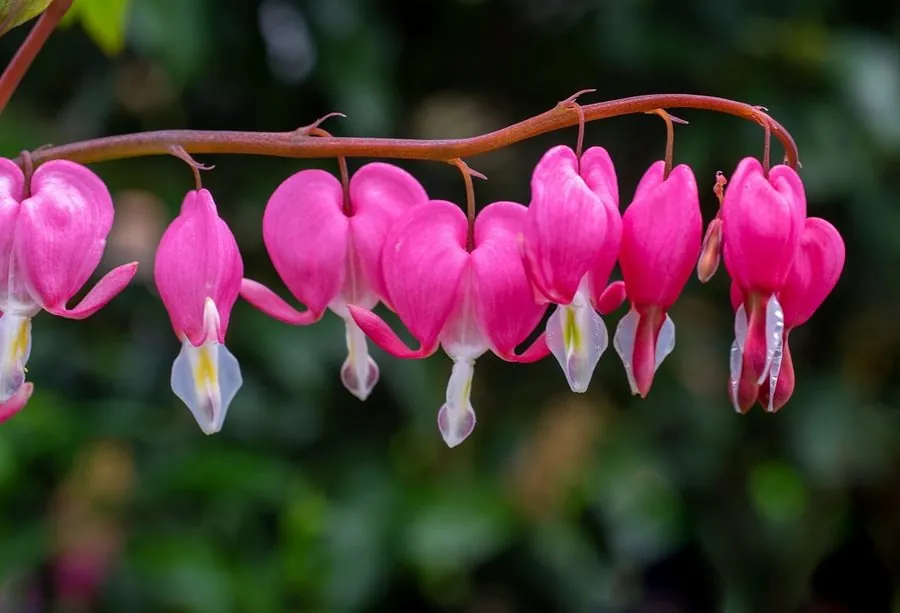

花卉与草本 · 植物界
荷包牡丹 Dicentra spectabilis

罂粟科多年生草本，粉红色心形花朵成串垂挂如荷包，是春季林下与花境中极具韵味的植物，原产中国北方与日本。
- 分类
- 门被子植物门纲木兰纲目毛茛目科罂粟科属荷包牡丹属
- 栖息环境
- 林下、溪边与阴湿山谷，喜半阴、湿润、凉爽
- 地理分布
- 原产中国北方、朝鲜半岛与日本，中国北方山地有分布
- 保护级别
- 暂无评估
物种志
荷包牡丹为罂粟科荷包牡丹属多年生草本，株高 40–80 厘米，茎直立，带肉质。叶片二回三出羽状分裂，形似牡丹叶。总状花序弯垂，花两侧对称，外侧两枚花瓣粉红色，基部膨大呈心形或荷包状，内侧花瓣白色，花期 4–6 月；果实为蒴果。
荷包牡丹原产中国北方、朝鲜半岛和日本，常生于林下、溪边等阴湿处，喜半阴、湿润和排水良好的环境，耐寒性较强。它花朵成串垂挂，形似一个个小荷包，因此得名；花期恰逢牡丹盛开，叶形也似牡丹，故又称“荷包牡丹”。荷包牡丹是春季林下和花境的优良材料，也适合盆栽；全株含生物碱，有一定毒性，不可食用，也不宜自行入药。
形态与习性
- 株高40–80 厘米，茎直立带肉质
- 花期4–6 月，花序弯垂
- 果期花后结蒴果
- 光照喜半阴，忌强光暴晒
- 水分喜湿润，忌积水
- 土壤疏松肥沃、富含腐殖质的壤土
- 繁殖分株、播种
- 主要用途林下花境、庭院点缀、盆栽
趣味知识
- 荷包牡丹的花朵呈心形，成串垂挂，形似一个个小荷包。
- 它花期恰逢牡丹盛开、叶形也似牡丹，因此得名。
- 荷包牡丹喜阴湿，是林下花境的优良材料。
- 全株含生物碱，有一定毒性，不可食用。